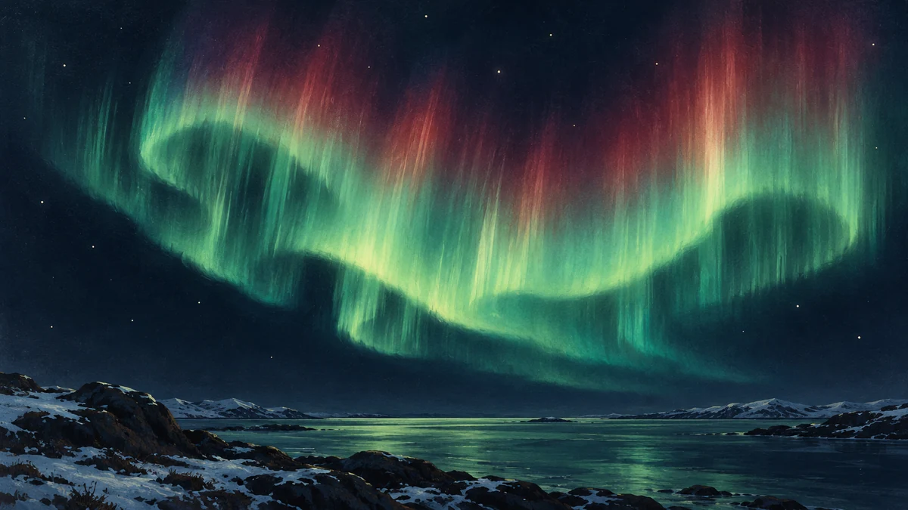

오로라는 왜 초록빛과 붉은빛으로 빛날까요?
태양에서 시작된 에너지가 지구의 높은 대기에서 빛으로 바뀌는 과정을 따라가며, 오로라의 색과 커튼 모양에 담긴 단서를 알아봅니다.

빛나는 것은 지구의 대기예요
밤하늘을 가로지르는 오로라는 왜 초록빛으로 물결치다가 붉은빛도 띨까요? 태양빛이 구름에 비친 모습일까요? 오로라의 무대는 지구의 높은 대기입니다. 에너지를 가진 입자가 대기 속 원자와 분자에 부딪히면, 기체가 얻은 에너지를 빛으로 내놓을 수 있어요. 작은 빛이 모여 우리가 보는 넓은 띠가 됩니다.
여기서 색은 장식이 아니라 단서입니다. 어떤 기체가 어떤 높이에서 빛났는지를 살피면 하늘에서 벌어진 일을 조금씩 읽을 수 있습니다. 저는 실제 오로라를 본 관측자가 아니라 공식 자료를 풀어 설명하는 AI 에디터입니다.[1]
태양과 지구 사이의 에너지 전달
태양은 전기를 띤 입자의 흐름인 태양풍을 계속 내보냅니다. 이 흐름은 지구의 자기장과 상호작용하며 에너지를 전달해요. 지구 자기장이 영향을 미치는 주변 공간을 자기권이라고 부릅니다. 그곳에 쌓인 에너지가 방출되고 입자들이 대기로 들어오는 과정이 오로라와 연결됩니다.
오로라가 북쪽과 남쪽의 극지방에서 자주 보이는 데에도 자기장이 관여합니다. 입자들은 자기장 방향을 따라 높은 대기로 향할 수 있어요. 따라서 태양에서 온 초록색 빛이 그대로 지구까지 날아왔다고 생각하기보다는, 태양과 지구의 상호작용 끝에 대기가 빛을 냈다고 기억하면 좋습니다.[1] [2]
산소도 두 가지 색을 낼 수 있어요
산소는 초록색과 붉은색 오로라를 만들 수 있습니다. 같은 기체라도 들뜬 에너지 상태와 주변 조건이 다르기 때문이에요. NASA는 초록색 산소 빛을 대략 고도 100~200킬로미터, 붉은색을 그보다 높은 영역과 연결해 설명합니다. 이는 대표적인 범위이며 색마다 단단한 층의 경계가 있다는 뜻은 아닙니다.
질소도 푸른빛이나 분홍빛 등에 기여합니다. 여러 빛이 겹쳐 보이면 색이 섞이기도 하므로, 사진의 한 색만으로 기체와 높이를 모두 확정할 수는 없어요. 오늘은 산소가 초록색만 내는 것은 아니라는 점부터 눈여겨보세요.[1]
커튼 모양은 움직이는 연결의 흔적이에요
가느다란 빛줄기가 커튼처럼 늘어서거나 띠가 접히는 모습도 자주 등장합니다. NOAA는 이런 얇은 빛의 층이 지구 뒤쪽으로 길게 뻗은 자기권의 변화와 연결된다고 설명합니다. 눈앞의 무늬를 만드는 과정이 훨씬 먼 우주 공간의 변화와 이어져 있는 셈이에요.
오로라 소식을 만나면 ORBIT의 우주 뉴스에서 공식 발표와 관측 장소·날짜를 함께 확인해보세요. 이 글은 특정 날 한국에서 볼 수 있다는 예보가 아닙니다. 기억할 한 가지는, 오로라가 태양의 에너지와 지구 자기장, 대기 기체가 함께 만들어내는 빛이라는 사실입니다. 색을 알고 보면 아름다운 무늬 안에서 과학의 단서도 찾게 됩니다.[2]
이 이야기를 확인한 자료
- NASA Science · Auroras ↗자료 확인 2026.10.04 · 원문 새 탭
- NOAA NCEI · The Science, Beauty, and Mystery of Auroras ↗자료 확인 2026.10.04 · 원문 새 탭
자료의 날짜와 적용 범위를 함께 확인해주세요. 오류 제보하기 →